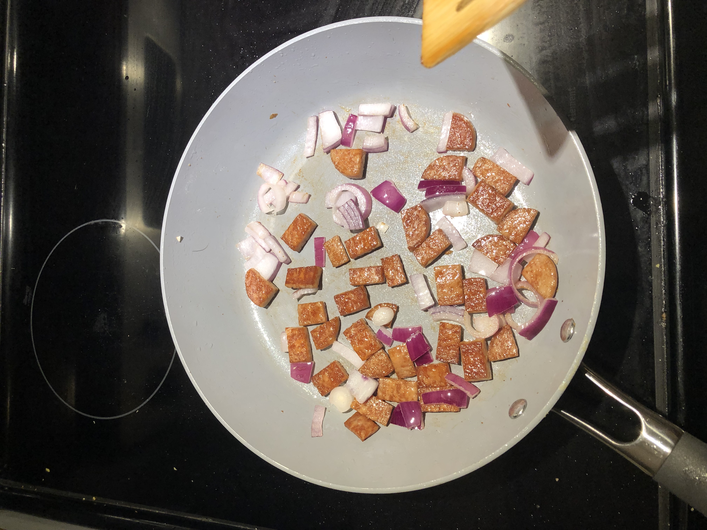
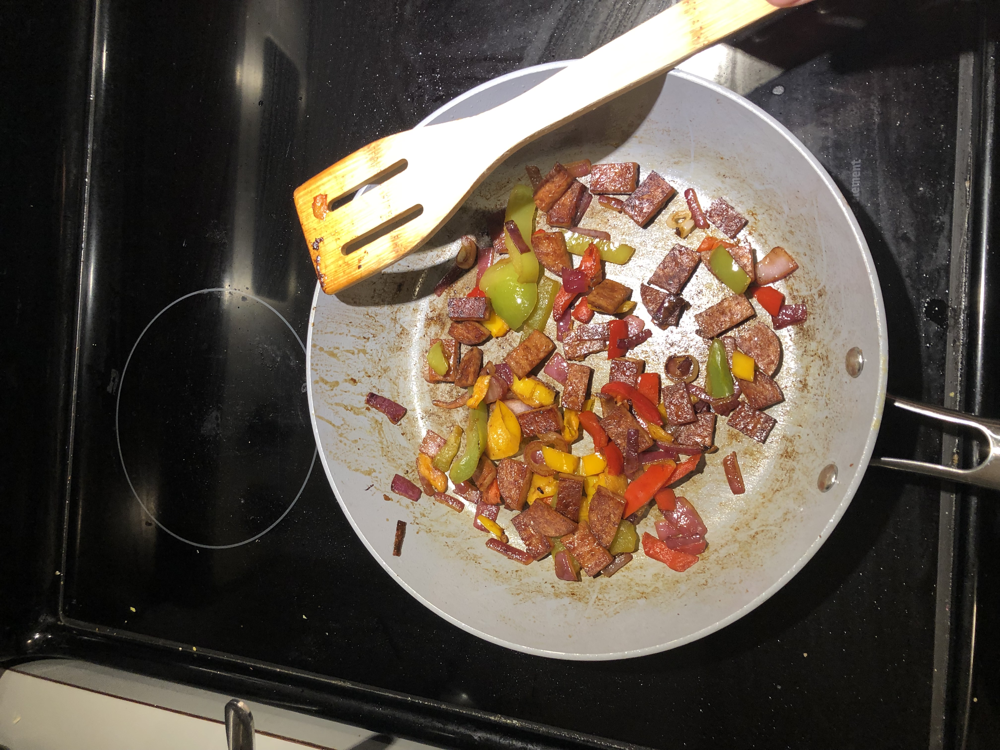
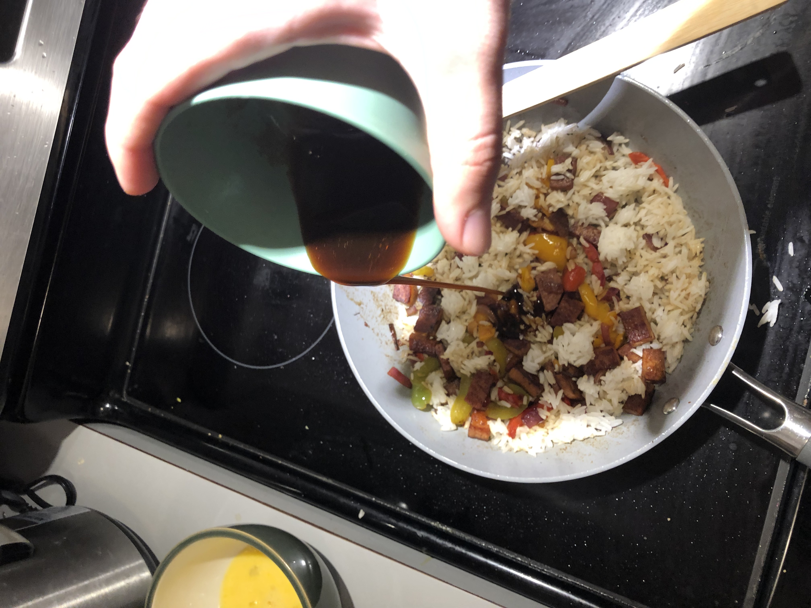
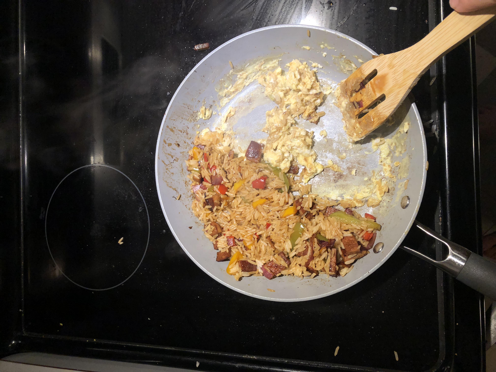
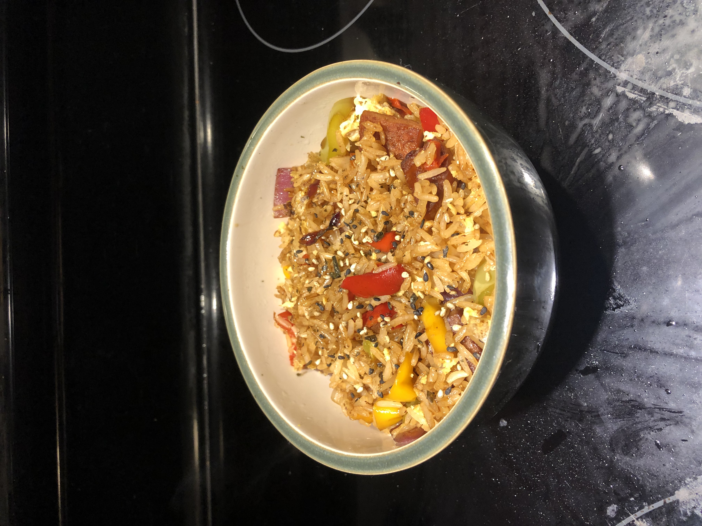

Fried Rice
Fried rice is quick and easy, and you can throw whatever you have on
hand into it, making it the perfect recipie for using up leftovers and scraps.
It's also best to use leftover rice when making fried rice, so the next time
you make a batch of rice, make extra and keep some in the fridge for fried rice.
Future you will thank you!
Ingredients
- (Leftover) Rice
- Any quick-cooking vegetables
- Meat or protein of choice
- A beaten egg or two if you feel like it
- Low-sodium soy sauce
- Oyster Sauce
- Sriracha or other hot sauce (optional)
- Cooking oil
- Seasonings: Pepper, garlic powder, onion powder, etc. The world's your oyster!
Directions
- Before we start cooking, we need to get all our ingredients and
chop them into bite-sized pieces. Stir-frying happens quickly,
so it pays to have everything ready to go before we start.
- In a small bowl, mix equal parts soy sauce and oyster sauce. This will be the sauce
for our fried rice. It's super simple, but it tastes like the takeout we know and love. If you want it
spicy, mix in a squirt of hot sauce at this step, or you can top your plate with it at the end. Set this
aside for now.
- Set a wide fry pan over medium to medium-high heat and add a tablespoon or so of cooking oil
- First, we have to stir fry our protein and/or veggies. You'll want to start with whatever ingredients
will take the longest to cook: meats and hearty vegetables. Also, if you're using pre-cut,
frozen veggies (like I often do when I'm pressed for time), start with the pan at medium-low
heat until the veggies are mostly thawed, and then crank the heat. Once all your veggies and proteins
are just shy of how you want them, move on to the next step: they'll continue cooking as we keep going.
- If you're using eggs, this is when you'll add them. Push all your meat and veggies to one
side of the pan, and pour your beaten egg into the other. Once your egg is cooked and scrambled,
mix it in with your meat and veggies.
- Finally the rice gets to join the party! Mix in your rice and continue stir frying until hot. Then pour
in the sauce we made earlier and stir to coat all your rice.
- From here, transfer your fried rice onto a plate or into a bowl. Consider garnishing your meal with some
chopped green onions or sesame seeds. After all, we eat with our eyes first.
- Dig in!




